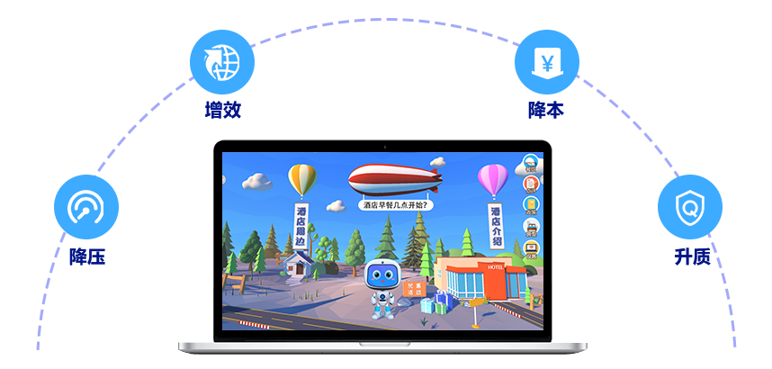

功能特点
语音转文字
自动将语音转为文字，匹配知识库中的关键字进行回复，展示对话内容。语音回答
以自然语言交互的方式，完成咨询问答服务。语义识别
同一个问题的多种问法都能识别。连接远程人工服务
自动连接后台工作人员，在线视频对话指导答疑。热门问题
智能汇总列举出询问频次比较高的问题。知识库
构建问答知识库，使用过程中能够不断搜集咨询问题，丰富知识库中内容...知识图谱
由多维度的海量知识组成，全面构建信息的结构关系，识别更灵活...咨询数据统计
智能评估咨询服务质量、智能统计机器人回复情况、热门分类...产品优势
核心AI引擎采用业界领先的人工智能算法，基于传统算法和深度学习融合的自然语言处理算法。
提供问答，统计，知识库管理等接口，可快速集成于各业务系统。
融合机器学习、信息检索、深度学习等多种技术的智能语义匹配引擎，保证用户问题...
通过机器学习自主完成领域知识挖掘，强化问答知识库，提升问答效果。
通过语义理解，符合逻辑的完成多轮对话，满足相对复杂的咨询对话场景。
融入知识图谱引擎服务，提供组合推荐、保证问答效果。
适用场景

应用价值

咨询机器人辅助传统的人工咨询台回答客户问题，降低咨询人员的工作压力。
咨询机器人全天候无休，能够服务更多客户，提升效率创造更大的价值。
咨询机器人使整个咨询工作流程实现自动化以及智能化，降低人工成本的投入。
智能客服机器为用户第一时间解答困惑，提升服务质量与客户满意度。